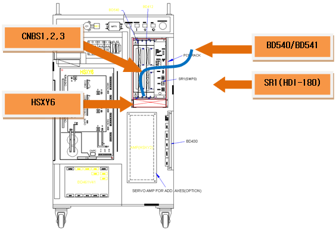
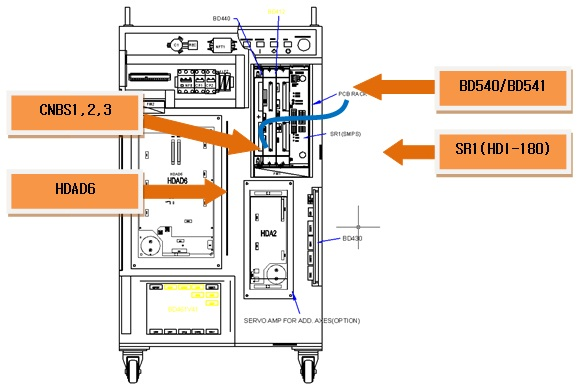
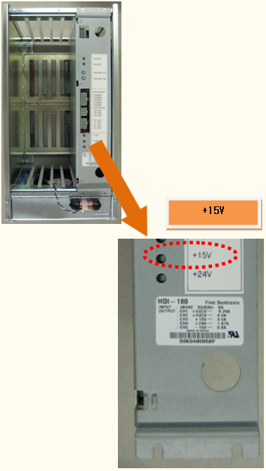
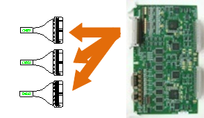
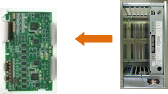

15.1. 개요
서보 구동장치에 공급되는 제어전원인 +15V가 저하되었습니다. 해당 에러는 서보 구동장치에서 검지하여 CNBS 케이블을 통해 서보 보드로 전달됩니다.
15.2. 원인 및 점검방법
|
1. 전원 표시 LED를 확인하여 주십시오. A. 서보 구동장치의 ‘VE’ LED를 확인하여 주십시오. B. 제어전원 공급장치인 SR1의 ‘+15V’ LED를 확인하여 주십시오. <2개 모듈의 LED가 모두 OFF된 경우> 2. 제어전원 공급장치(SR1)의 출력을 확인하여 주십시오. A. CNBS 케이블을 분리한 후 LED를 확인하여 주십시오. B. 서보 보드를 Rack에서 분리한 후 LED를 확인하여 주십시오. 3. 제어전원 공급장치(SR1)를 점검하여 주십시오. A. SR1에 입력되는 전압을 확인하여 주십시오. B. SR1을 교체한 후 LED를 확인하여 주십시오. <서보 구동장치의 ‘VE’ LED만 OFF된 경우> 4. 관련 부품을 교체하여 전원 표시 LED를 확인하십시오. A. CNBS 케이블을 교체한 후 LED를 확인하여 주십시오. B. 서보 보드를 교체한 후 LED를 확인하여 주십시오. C. 서보 구동장치를 교체한 LED를 확인하여 주십시오. |
1. 전원 표시 LED를 확인하여 주십시오.
구동장치 제어전압 저하 에러는 제어용 +15V의 저하로 인해 서보 구동장치에서 검지하고, CNBS1,2,3 케이블을 통하여 서보 보드(BD540/BD541)에서 처리합니다.

그림 5.56 Hi4a-0000 제어기의 구동장치 제어전압 저하 관련 부품 배치

그림 5.57 Hi4a-0010/0012 제어기의 구동장치 제어전압 저하 관련 부품 배치
1) 서보 구동장치의 ‘VE’ LED 점검
구동장치 제어전압 에러를 검지하는 모듈인 중형용 HSXY6와 소형용 HDAD6의 ‘VE’를 확인하여 주십시오. 정상적으로 전원이 공급되는 경우에는 해당 LED가 항상 ON(점등)되어 있어야 합니다.
중형 로봇용 서보 구동장치 : HSXY6
소형 로봇용 서보 구동장치 : HDAD6
2) SR1의 ‘+15V’ LED 점검
서보 구동장치의 ‘VE’ LED가 OFF되어 있으면 SR1의 LED를 확인하여 주십시오. SR1과 서보 구동장치의 LED가 동시에 OFF되어 있는 지 확인하여 주십시오.

그림 5.58 SR1의 ‘+15V’ LED 관련 부품 배치
2. SR1의 출력을 확인하여 주십시오.
SR1 자체 출력을 확인하기 위해 서보 구동장치에 연결되는 배선과 부품을 분리하여 ‘+15V’ LED를 점검합니다.
1) CNBS 케이블을 분리한 후 LED를 점검
서보 구동 장치와 서보 보드를 연결하는 CNBS1, CNBS2, CNBS3을 분리한 후 SR1의 LED를 확인하여 주십시오. 케이블을 분리한 후에 SR1의 ‘+15V’ LED가 ON되는 경우에는 서보 구동장치의 불량입니다. 서보 구동장치를 정상품과 교체하여 주십시오.

그림 5.59 CNBS 케이블의 분리
2) 서보 보드(BD540/BD541)를 분리한 후 LED를 점검
Rack 에서 서보 보드를 분리한 후 SR1의 LED를 확인하여 주십시오. 서보 보드를 분리한 후 SR1의 ‘+15V’ LED가 ON되는 경우에는 서보 보드 불량입니다. 서보 보드를 정상품과 교체하여 주십시오.

그림 5.60 Rack에서 서보 보드의 분리
3. 제어전원 공급장치(SR1)를 점검하여 주십시오.
제어전원 공급장치는 AC 48V를 입력 받아 내부회로에서 각 보드에 필요한 제어전원을 출력합니다.
1) SR1의 입력 전압의 점검
SR1에 입력되는 전압이 사양을 벗어나는 경우 제어용 전원의 출력에 이상이 발생 할 수 있습니다. 입력전압이 허용 범위를 초과하는 경우에는 제어기 입력전압 점검 절차와 제어기 내부 단상 전압 점검 절차를 참고하시기 바랍니다.
SR1 입력 전압 사양 : 단상 AC 48V
허용 범위 : 44V ~ 52V
2) SR1의 교체 후 LED 확인
SR1을 정상품으로 교체 한 후 ‘+15V’ LED를 확인하여 주십시오. 정상품으로 교체 후 LED가 ON되면 SR1 불량입니다. 정상품으로 교체하여 사용하시기 바랍니다.
4. 관련 부품을 교체하여 전원 표시 LED를 확인하여 주십시오.
서보 구동장치, 서보 보드 및 CNBS 케이블을 교체한 후 서보 구동장치의 ‘VE’ LED를 확인하여 주십시오.
1) CNBS 케이블을 교체한 후 ‘VE’ LED를 점검
서보 구동장치와 서보 보드를 연결하는 CNBS1, CNBS2, CNBS3을 교체한 후 서보 구동장치의 ‘VE’ LED를 확인하여 주십시오. 케이블을 교체한 후에 ‘VE’ LED가 ON되는 경우에는 케이블의 불량입니다. CNBS 케이블을 정상품으로 교체하여 주십시오.
2) 서보 보드를 교체한 후 ‘VE’ LED를 점검
서보 보드를 교체한 후 서보 구동장치의 ‘VE’ LED를 확인하여 주십시오. 서보 보드를 교체한 후에 ‘VE’ LED가 ON되는 경우에는 서보 보드의 불량입니다. 서보 보드를 정상품으로 교체하여 주십시오.
3) 서보 구동장치를 교체한 후 ‘VE’ LED를 점검
서보 구동장치를 교체한 후 서보 구동장치의 ‘VE’ LED를 확인하여 주십시오. 케이블을 교체한 후에 ‘VE’ LED가 ON되는 경우에는 서보 구동장치의 불량입니다. 서보 구동장치를 정상품으로 교체하여 주십시오..
중형 로봇용 서보 구동장치 : HSXY6
소형 로봇용 서보 구동장치 : HDAD6